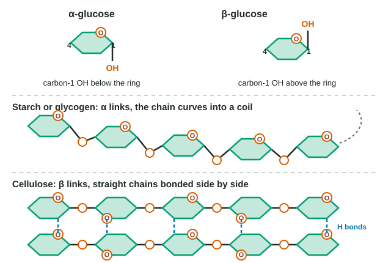

Carbohydrates are the sugars and the large molecules built from them. They fuel cells, store energy for later and build some of the toughest materials in nature. All of that comes from a few simple sugars, joined in different ways.
Monosaccharides: single sugars
A monosaccharide ("one sugar") is the monomer of carbohydrates. The most important is glucose, C6H12O6: the sugar your cells break down for energy and the sugar plants make in photosynthesis. Two other common six-carbon sugars, fructose (fruit sugar) and galactose (part of milk sugar), have exactly the same formula. They are isomers: the same atoms arranged differently, so they taste different and cells handle them with different enzymes.
Monosaccharides carry several hydroxyl (–OH) groups and one carbonyl (C=O) group, so they are polar and dissolve easily in water. In water, glucose curls up into a ring. When the ring closes, the –OH on carbon 1 can end up on either side:
- Alpha glucose (α-glucose): the carbon-1 –OH points below the ring.
- Beta glucose (β-glucose): the carbon-1 –OH points above the ring.
That one small difference turns out to decide whether a polymer is food or fiber (Figure 1).

Glycosidic bonds and disaccharides
Two monosaccharides join by dehydration synthesis: an –OH from each sugar reacts, a water molecule is released, and an oxygen bridge, the glycosidic bond, links them. Two sugars joined this way make a disaccharide:
| Disaccharide | Made of | Where you meet it |
|---|---|---|
| Maltose | glucose + glucose | Formed when starch is digested; malted grain |
| Sucrose | glucose + fructose | Table sugar, from sugar cane and beets |
| Lactose | glucose + galactose | Milk |
Worked example. What is the formula of sucrose, and how much monosaccharide do you get by hydrolyzing 34.2 g of it?
Glucose + fructose = C12H24O12; remove one H2O for the bond: C12H22O11, mass 342 (each monosaccharide is 180, water 18). Hydrolysis adds the water back, so 342 g of sucrose gives 360 g of monosaccharides, half glucose and half fructose. 34.2 g of sucrose therefore gives 36.0 g: 18.0 g glucose and 18.0 g fructose.
A person with lactose intolerance makes little of the enzyme lactase, which hydrolyzes lactose. The lactose passes undigested into the large intestine, where bacteria feed on it and produce gas.
Polysaccharides
A polysaccharide ("many sugars") is a chain of hundreds to thousands of monosaccharides joined by glycosidic bonds. Their jobs fall into two groups: storing energy and building structures.
Storage: starch and glycogen
Starch is how plants store the glucose they make. It is a mix of amylose (unbranched chains of α-glucose that coil into a spiral) and amylopectin (similar chains with a branch every 24 to 30 units). Potatoes, rice, wheat and corn are full of it. Glycogen is the animal version, stored mainly in the liver and muscles. It is also α-glucose but even more highly branched, about every 8 to 12 units, which makes it compact and gives it many chain ends where enzymes can clip off glucose quickly when you need energy.
Structure: cellulose and chitin
Cellulose is a chain of β-glucose. Because each β bond flips the next glucose upside down, the chain runs straight instead of coiling. Straight chains lie side by side, and the –OH groups on neighboring chains form many hydrogen bonds, binding dozens of chains into strong cables, the fibers of plant cell walls. A cell wall is a stiff layer of these fibers surrounding each plant cell; it is why celery is crunchy and wood is hard. Cellulose is the most abundant organic molecule on Earth.
Chitin is built like cellulose, from β-linked sugars, but each sugar carries a nitrogen-containing group in place of one –OH. Chitin forms the hard exoskeletons of insects, crabs and spiders and the walls of fungi.
| Starch | Glycogen | Cellulose | Chitin | |
|---|---|---|---|---|
| Monomer | α-glucose | α-glucose | β-glucose | β-linked sugar with N |
| Shape | Coiled; some branches | Coiled; many branches | Straight; chains bonded side by side | Straight; chains bonded side by side |
| Role | Energy storage | Energy storage | Structure | Structure |
| Found in | Plants (seeds, roots, tubers) | Animals (liver, muscle), fungi | Plant cell walls | Insect and crab exoskeletons; fungi |
| Digested by humans? | Yes | Yes | No (dietary fiber) | No |
Why you can digest starch but not cellulose
Enzymes that hydrolyze glycosidic bonds fit the shape of the bond they cut. Your starch-digesting enzymes fit α bonds. A β bond is held at a different angle, so the same enzymes cannot grip it, even though the chain is still pure glucose. Cellulose therefore passes through you as dietary fiber, which helps food move through the gut. Cows, goats and termites eat cellulose all day; they digest it mainly because microbes living in their guts make enzymes that cut β bonds.